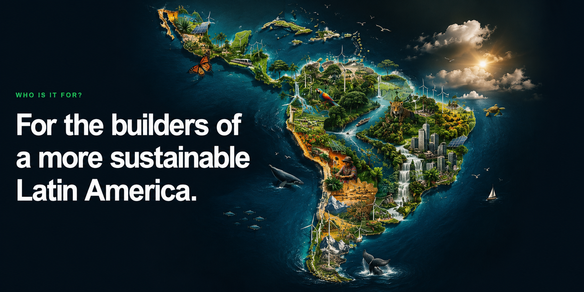

Conectar
Relações significativas entre setores, países e disciplinas.
Comunidade · Inovação · Sustentabilidade · América Latina
SUSU está construindo uma comunidade para as pessoas que estão moldando o futuro sustentável da América Latina.
SUSU conecta empreendedores, empresas, investidores, universidades, organizações e líderes do setor público por meio de conversas curadas e formatos pensados para gerar colaboração.
Relações significativas entre setores, países e disciplinas.
Ideias, perspectivas e perguntas que ajudam as pessoas a pensar diferente.
Projetos, parcerias e oportunidades com impacto real e de longo prazo.
Das florestas e oceanos às cidades, ao campo, aos polos de inovação e à energia limpa, o futuro da América Latina será construído conectando pessoas, países, setores e disciplinas.
Ilustração inspirada nos ecossistemas, cidades, biodiversidade e potencial de energia limpa da América Latina.

Conversas pequenas e curadas. O primeiro passo.
Mesas privadas sobre desafios específicos.
Palestras, workshops e momentos de aprendizagem.
Um encontro maior quando a comunidade estiver pronta.
Primeiro passo
Um encontro presencial e privado em Buenos Aires para um pequeno grupo de pessoas que estão construindo o futuro sustentável da América Latina.
Entre na lista para receber novidades sobre o primeiro SUSU Coffee e futuros formatos.
Estamos construindo primeiro uma comunidade. Eventos, conferências e summits podem vir depois. O ponto de partida é simples: melhores conversas entre pessoas que deveriam se conhecer.